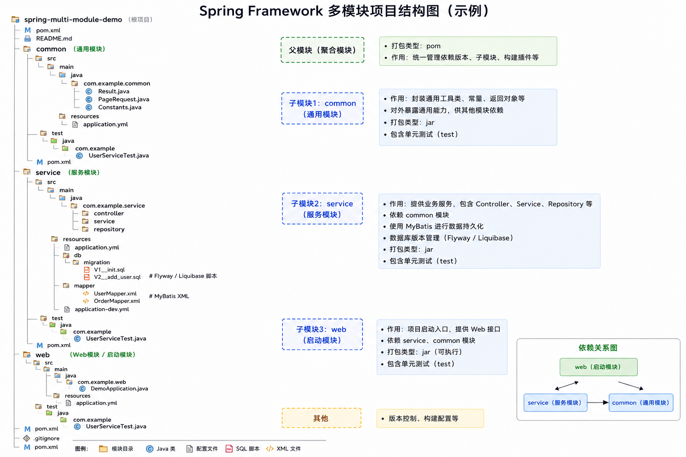

企业 Java 应用开发的基础框架
概要
Spring Framework 是企业级 Java 应用的基础框架，核心目标是把对象创建、依赖组装、横切能力、事务、Web 请求处理和数据访问统一到可测试、可替换、可演进的应用模型中。它不是某个单一 Web 框架，而是一组围绕 IoC Container（控制反转容器） 的开发能力。
应用开发时要把 Spring 理解为“业务对象运行的容器”：容器管理 Bean，DI（Dependency Injection，依赖注入）连接对象，AOP（Aspect-Oriented Programming，面向切面编程）承载日志、审计、权限、事务等横切逻辑，Spring MVC处理 HTTP，Data Access Abstraction（数据访问抽象）统一 JDBC、事务与 ORM 集成。
flowchart TB
APP["业务应用"] --> IOC["IoC Container
BeanFactory · ApplicationContext"]
IOC --> DI["DI
构造器注入 · 配置类 · 作用域"]
IOC --> AOP["AOP
代理 · 切面 · 通知"]
IOC --> MVC["Spring MVC
DispatcherServlet · Controller"]
IOC --> DATA["Data Access
JdbcTemplate · Tx · ORM 集成"]
IOC --> ENV["Environment
Profile · PropertySource"]
图：Spring Framework 应用开发能力地图

图：Spring Framework 多模块项目结构图（示例）
上图是典型的 Maven 多模块 Spring 项目：父 pom 管聚合与版本，子 pom 管各自依赖与打包。父模块没有 src/，只负责把 common、service、web 三个子模块串成一次构建；依赖方向是 web → service → common，与图中箭头一致。
父 pom（spring-multi-module-demo/pom.xml） 的 packaging 必须是 pom，核心内容如下：
<modules>：声明子模块目录名common、service、web，执行mvn install时按顺序递归构建。<dependencyManagement>：统一 Spring Boot BOM、MyBatis、Flyway 等第三方版本，以及内部模块common/service的版本（通常写${project.version}）。<pluginManagement>：统一maven-compiler-plugin、spring-boot-maven-plugin等插件版本与配置，子模块引用时不必重复写版本号。<properties>：如java.version、编码、Spring 版本等全局属性，供子模块和插件继承。
<project>
<groupId>com.example</groupId>
<artifactId>spring-multi-module-demo</artifactId>
<version>1.0.0</version>
<packaging>pom</packaging>
<modules>
<module>common</module>
<module>service</module>
<module>web</module>
</modules>
<dependencyManagement>
<dependencies>
<dependency>
<groupId>org.springframework.boot</groupId>
<artifactId>spring-boot-dependencies</artifactId>
<version>3.4.0</version>
<type>pom</type>
<scope>import</scope>
</dependency>
<dependency>
<groupId>com.example</groupId>
<artifactId>common</artifactId>
<version>${project.version}</version>
</dependency>
<dependency>
<groupId>com.example</groupId>
<artifactId>service</artifactId>
<version>${project.version}</version>
</dependency>
</dependencies>
</dependencyManagement>
</project>子 pom 都要通过 <parent> 指向父模块，继承 groupId、version 和 dependencyManagement；各自 packaging 为 jar，只声明本模块真正用到的依赖：
common/pom.xml：放Result、PageRequest、Constants等通用类，依赖尽量轻（如 validation、commons），不依赖其他内部模块，也不引入 Web 或数据库 starter。service/pom.xml：承载 Controller / Service / Repository 与 MyBatis、Flyway 配置，声明对common的依赖，并引入spring-boot-starter-jdbc、MyBatis、数据库驱动、Flyway 等。web/pom.xml：启动模块，含DemoApplication.java；依赖service（会传递引入common）和spring-boot-starter-web；在<build>里配置spring-boot-maven-plugin打出可执行 fat jar。
<!-- common/pom.xml：无内部模块依赖 -->
<parent>
<groupId>com.example</groupId>
<artifactId>spring-multi-module-demo</artifactId>
<version>1.0.0</version>
</parent>
<artifactId>common</artifactId>
<packaging>jar</packaging>
<!-- service/pom.xml：依赖 common -->
<artifactId>service</artifactId>
<dependencies>
<dependency>
<groupId>com.example</groupId>
<artifactId>common</artifactId>
</dependency>
<dependency>
<groupId>org.mybatis.spring.boot</groupId>
<artifactId>mybatis-spring-boot-starter</artifactId>
</dependency>
<dependency>
<groupId>org.flywaydb</groupId>
<artifactId>flyway-core</artifactId>
</dependency>
</dependencies>
<!-- web/pom.xml：启动模块，打可执行 jar -->
<artifactId>web</artifactId>
<dependencies>
<dependency>
<groupId>com.example</groupId>
<artifactId>service</artifactId>
</dependency>
<dependency>
<groupId>org.springframework.boot</groupId>
<artifactId>spring-boot-starter-web</artifactId>
</dependency>
</dependencies>
<build>
<plugins>
<plugin>
<groupId>org.springframework.boot</groupId>
<artifactId>spring-boot-maven-plugin</artifactId>
</plugin>
</plugins>
</build>子模块写依赖时通常只写 groupId + artifactId，版本由父 pom 的 dependencyManagement 统一管理；在根目录执行 mvn clean install 即可一次构建全部模块。更完整的多模块构建命令见第 13 章 · 多模块项目。
关键/技巧
- IoC Container 解决对象创建和依赖装配，不让业务代码到处
new基础设施对象。 - ApplicationContext 在 BeanFactory 之上提供事件、资源、国际化、环境和生命周期管理。
- 声明式能力 的本质通常是代理，例如
@Transactional、@Cacheable、@Async。
速记
Spring Framework 管对象、管边界、管横切；业务代码专注用例和领域规则。